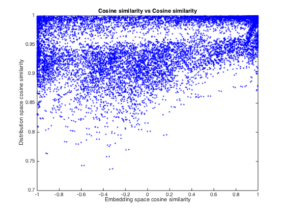
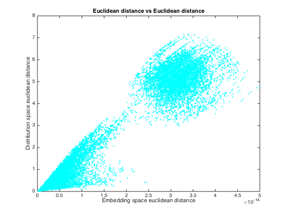
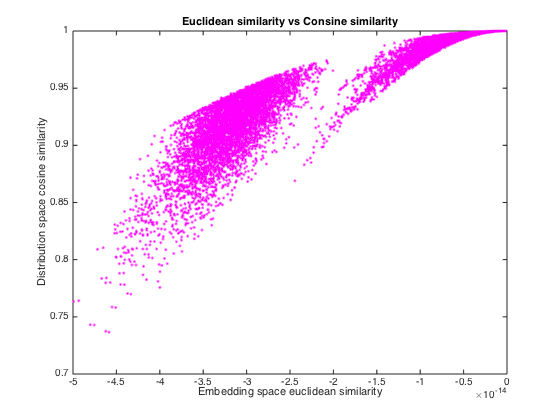
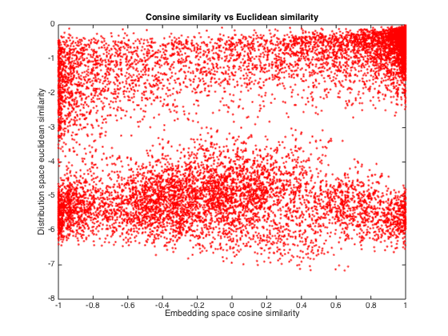
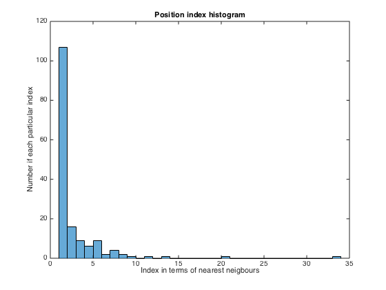
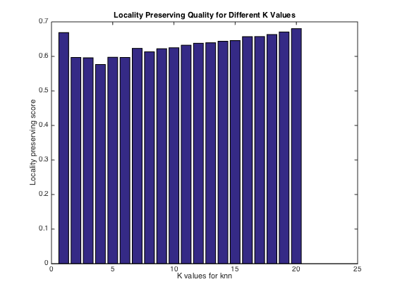

VISUAL ASSESSMENT
Contents
Initialise and similarity functions
close all clc cosine_simi = @(X,Y) bsxfun(@rdivide, bsxfun(@rdivide, X*Y',sqrt(sum(X.^2,2))), sqrt(sum(Y.^2,2)')); euclidean_simi = @(X,Y) sqrt(repmat(sum(X.^2,2), [1,size(Y,1)]) + repmat(sum(Y.^2,2)', [size(X,1),1]) ... - 2*X*Y'); m = size(R,1);
Correspondence Cosine Graph
Cosine similarity of the embedded document pairs vesus cosine similarity in the distribution space.
% pairwise cosine similarity matrix DocPair_CosineSimi = cosine_simi(R,R); PVDocPair_CosineSimi = cosine_simi(PV_docs,PV_docs); % lower triangular data DocPair_CosineSimi_Tril = DocPair_CosineSimi(tril(true(m),-1)); PVDocPair_CosineSimi_Tril = PVDocPair_CosineSimi(tril(true(m),-1)); figure plot(PVDocPair_CosineSimi_Tril, DocPair_CosineSimi_Tril, 'b.'); xlabel('Embedding space cosine similarity'); ylabel('Distribution space cosine similarity'); title('Cosine similarity vs Cosine similarity');
Correspondence Euclidean Graph
Euclidean distance of the embedded document pairs vesus cosine similarity in the distribution space.
% pairwise L2 distance matrix DocPair_EucDistance = euclidean_simi(R,R); PVDocPair_EucDistance = euclidean_simi(PV_docs,PV_docs); % lower triangular data DocPair_EucDistance_Tril = DocPair_EucDistance(tril(true(m),-1)); PVDocPair_EucDistance_Tril = PVDocPair_EucDistance(tril(true(m),-1)); figure plot(PVDocPair_EucDistance_Tril, DocPair_EucDistance_Tril, 'c.'); xlabel('Embedding space euclidean distance'); ylabel('Distribution space euclidean distance'); title('Euclidean distance vs Euclidean distance');
Mixed Graph
Euclidean similaity in embedding space versus cosine similarity in distribution space; Cosine similarity in distribution space versus euclidean similarity in the embedding space.
% Euclidean vs Cosine figure plot(-PVDocPair_EucDistance_Tril, DocPair_CosineSimi_Tril, 'm.'); xlabel('Embedding space euclidean similarity'); ylabel('Distribution space cosine similarity'); title('Euclidean similarity vs Consine similarity'); % Cosine vs Euclidean figure plot(PVDocPair_CosineSimi_Tril, -DocPair_EucDistance_Tril, 'r.'); xlabel('Embedding space cosine similarity'); ylabel('Distribution space euclidean similarity'); title('Consine similarity vs Euclidean similarity'); 
Distribution space index counts graph
While given the nearest neighbour for any points in the embedded docuemnts space, generating the knn counts distribution for this nearest neighbour pionts in the distribution space.
PS: nearest neighbours are based on L2 distance measure
[~, PV_I] = sort(PVDocPair_EucDistance, 'ascend'); PV_nnIdx = PV_I(2,:); % store the nearest neighbour index [~, I] = sort(DocPair_EucDistance, 'ascend'); count = zeros(m,1); for ii = 1 : m count(ii) = find(I(2:end,ii) == PV_nnIdx(ii)); % find the index in the distribution space end figure histogram(count,'BinWidth',1); title('Position index histogram'); xlabel('Index in terms of nearest neigbours'); ylabel('Number if each particular index');
Locality preserving graph for different k values in knn
Show the preserving quality for the ditribution space in terms of k nearest neighbours in the embedding space.
N = 20; % only consider to 20 nearest neighbours at max score = zeros(N,1); for ii = 1 : N PV_NNIdx = PV_I(2 : ii+1,:); % extract the index of ii nearest neighbours in the embedding space NNIdx = I(2:ii+1,:); appearedknn = zeros(m,1); for jj = 1 : m appearedknnidx = ismember(PV_NNIdx(:,jj),NNIdx(:,jj)); appearedknn(jj) = sum(appearedknnidx); end score(ii) = sum(appearedknn)/ii/m; end figure bar(score); title('Locality Preserving Quality for Different K Values') xlabel('K values for knn'); ylabel('Locality preserving score');